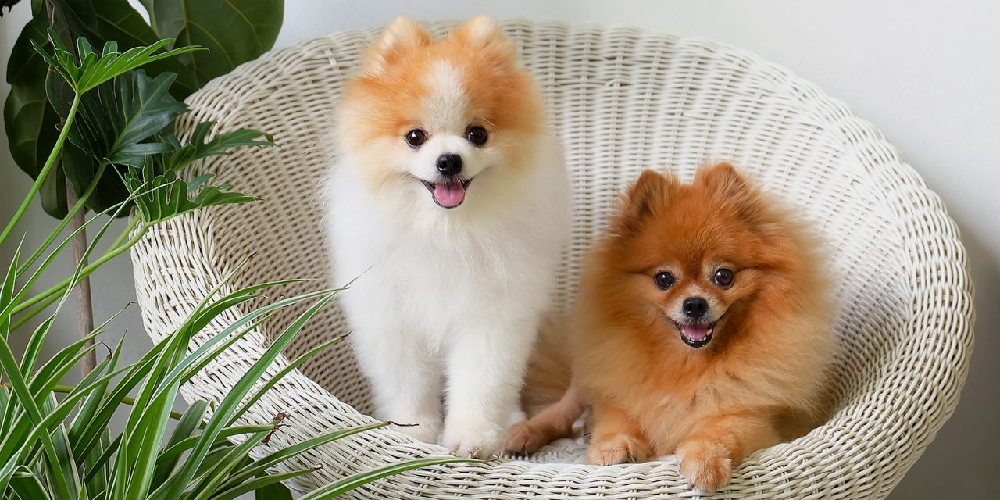

О себе
Меня зовут Орлов Леонид Павлович. МНе 15 лет и я ученик 9Г класса ОГБОУ "Лицей №9 г. Белгорода". Начал изучать программированние прошлой весной. Первый язык, которому я обучился это Python. Кроме программирования я занимаюсь борьбой, пулевой стрельбой, 3D - моделированием.
О чём мой сайт
Свой сайт я посвятил декоративным породам собак. Целью его является ознакомление человека с краткой информацией о породе. Целевой аудиторией сайта является каждый человек, который хочет завест себе домашнего питомца. Мой сайт описывает такую информацию о породе, как: краткая информация, внешний вид, уход, питание и болезни собаки. В дальнейшем я буду дополнять свой сайт другими породами собак.